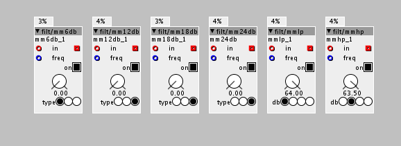

Hey!
Uh. long time since I checked them. I will check next time I use Axoloti. Which is probably tomorrow.

Hey!
Uh. long time since I checked them. I will check next time I use Axoloti. Which is probably tomorrow.
Hey @EmilHarder
I checked it now and yes there might be some higpitched noise. I didnt check if the high pitched noise was there, but looked at the code and I can see what could potentially cause it. I will look into it and see if I can fix it. I am still learning coding so no promises on when they will be fixed.
New additions - 12 new mixers!
Search:
jaffa/mix2/mx4a
jaffa/mix2/mx4b
jaffa/mix2/mx4c
jaffa/mix2/mx4d
jaffa/mix2/mx4e
jaffa/mix2/mx4f
jaffa/mix2/mx4g
jaffa/mix2/mx4h
jaffa/mix2/mx4i
jaffa/mix2/mx4j
jaffa/mix2/mx4k
jaffa/mix2/mx4l
These are mixers, with a signal flow like any regular desktop mixer like Mackie, yamaha etc.. with everything build in, like sends, subgroups, master volume etc. Basically a full fletched "studio mixer"  They range from 3 to 8 channels. Larger mixer has got 2 subgroups, midsize mixers has got 1 subgroup and small none. Same goes for send effects. The first send is mono send and stereo return, the second is mono send mono return. Sends are post channel volume fader. See in the description of object how much DSP each object uses. Biggest mixer is heavy, like 18% DSP usage!
They range from 3 to 8 channels. Larger mixer has got 2 subgroups, midsize mixers has got 1 subgroup and small none. Same goes for send effects. The first send is mono send and stereo return, the second is mono send mono return. Sends are post channel volume fader. See in the description of object how much DSP each object uses. Biggest mixer is heavy, like 18% DSP usage!
Check the help file how to set the largest mixer up. I havent tweeked the sounds in the helpfile, it is only to show how to set it up.
New additions - Envelope follower with parameter instead of attribute!
Search: jaffa/env/Follow2
This is the same envelope follower as in the fac.lib., but this one lets you set the envelope followers response time when being live cause it is a parameter not an atribute. I think this is nice when making compressors, cause it gives some more flexibility.

New additions - 6 multimode LP BP & HP filters!
Search:
jaffa/filt/mm6db
jaffa/filt/mm12db
jaffa/filt/mm18db
jaffa/filt/mm24db
jaffa/filt/mmlp
jaffa/filt/mmhp
These filters are my own versions of the factory filters filter/lp1 m & filter/hp1 m made by @johannes, which I really like a lot. I am not 100% sure about if it is the right term, but I think they are first order, which I understand is 1 pole filters, which are 6db filter. And stacking 1 pole filter should then give 12,18,24 db etc.
They are then serial connected and combined into multimode filters of LP BP & HP. And there are 6,12,18 and 24db versions. No resonance in these filters, which I actually like. There is also a version with 4 stacked low pass filters and one with 4 stacked hi pass filters only;

New additions - All pass filters in series!
Search:
jaffa/filt/allpass int 1
jaffa/filt/allpass int 2
jaffa/filt/allpass int 3
jaffa/filt/allpass int 4
jaffa/filt/allpass int 4 a
jaffa/filt/allpass int 5
jaffa/filt/allpass int 6
jaffa/filt/allpass int 7
jaffa/filt/allpass int 8
jaffa/filt/allpass int 8 a
jaffa/filt/allpass int 8 b
This is a bunch of @TheSlowGrowth's all pass filters, put inside one single object. There are several versions with 1 to 8 all passes inside:
The ones with no letter in the end of the names has the outlets exposed for each filter.
The ones with a in the end of the names are serial connected in one serie.
The one with b in the end of the names has 2 parallel path, like 2X4.
I have basically done the "boring" job by putting all the code in the objects. So one doesn't has to start all the way at the bottom every time one wants to build a reverb 
Check @TheSlowGrowth's subpatch reverb on how to use them: TSG/fx/reverb
New additions - Simple sample player with build in ADSR envelope!
Search: jaffa/sam/simsam1
This is a simple sample player with a build in ADSR envelope and pitch and position control. See helpfile on how to set it up.
New additions - Simple stereo reverb!
Search: jaffa/rev/verb1
Not so much to say here. A stereo reverb made from 8 allpass delays, 2 series of 4 and not much else. Has little bit of metallic touch to it, but I kind of like it. Very simple and straight forward. Set mix to 32 and feed to around 56 and you are good to go. In addition maybe also add a lo pass filter to anything you send through the reverb, as the reverb doesnt do any filtering at all
14% DSP
Wuhu, during this week I reached beyond 1000 visits to my contribution page.
Cakes on me:
Hey @jaffasplaffa
I found a solution. It's something about settign the output buffer to zero.
I'm new to programming for dsp myself, but this thread helped:
Keep up the good work!
New additions - Phaser!
Search: jaffa/fx/phaser1
Fairly simple phaser with 2 stages. Might be updated a little bit in the nearest future, since I experienced some clicks in some situations...... but it sounds pretty decent as it is now.
I can't check my code right now, but I think it was a mashup of thetechnobears and SmashedTransistors' suggestions.
Something like:
if(!param_active){
for(int i=0;i<BUFSIZE;i++)
outlet_out[i] = 0;
return;
} else {
/*original code here*/
}And then changed 'outlet_out' to the right name for the objects out.
(EDIT/DELETE: Thought a replied to wrong post.)
New additions - Noise gate + compressor w. sidechain + multiband system
Search:
jaffa/dyn/ng1
jaffa/dyn/compb2
jaffa/dyn/compb3
jaffa/dyn/mbext1
The time parameter on the noise gate and the compressor lets you set how quick the envelope follower reacts. This parameter is usually not disposed on a gate or compressor, but I thought i'd leave it for people to experiment a bit with it. It changes the overall response time of the compressor.
The multiband system is... Just a multiband system. You can add gates compressor or whatever you like to it. I tried to keep it as "open" as possible and leave it up tp the users what they like to add. Be careful with the bands volume cause they are GAIN stages. Unison volume is 2 for the gain. Or you can use the "reset parameter" to get back to starting point.
New addition - 1 hz object
Search: jaffa/math/1hz
To be used for setting the speed of the saw lin lfo in hz. See helpfile
New additions - 2 interped dials, uni/bip
Search:
jaffa/ctrl/dial i
jaffa/ctrl/dial i2
New additions - Many midi note outs combined in 1 object.
Search:
jaffa/ctrl/note2
jaffa/ctrl/note4
jaffa/ctrl/note8
New additions - Modulo, Pow(2), displays & strings.
Search:
jaffa/math/modulo
jaffa/math/POW3
jaffa/disp/d4a
jaffa/disp/d4b
jaffa/disp/d4c
jaffa/disp/d4d
jaffa/disp/d4e
jaffa/string/c2
jaffa/string/c4
jaffa/string/c8
Wuhuu rounded the 2k views. Thanks 
Seems like it might be time for some new objects......
Stay tuned...
New additions - Simple samplers
Search:
jaffa/sam/simsam1
jaffa/sam/simsam2
jaffa/sam/simsam3
jaffa/sam/simsam4
A couple of different versions of the simsam1 I uploaded a while ago, with different kind of setups.
Very easy to use. See the help file.


{kind=link}
{kind=link}
{kind=link}
{kind=link}